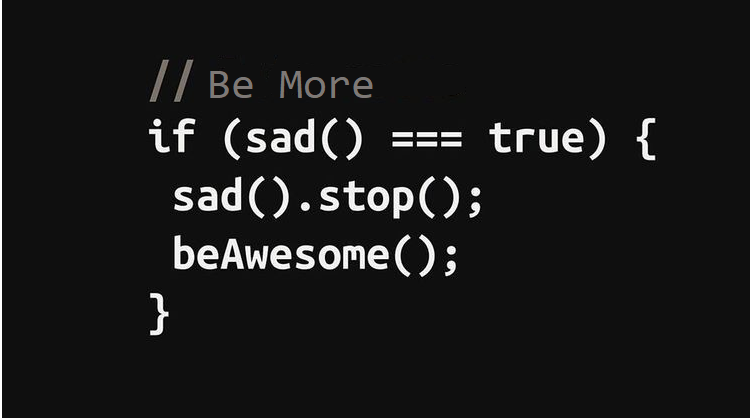

Sobre a matéria:
A lógica de programação é a capacidade que todo programador precisa ter para resolver os problemas que aparecem no dia-a-dia. A capacidade de dividir o problema em partes menores é uma etapa essencial da lógica de programação e precisa ser levada em consideração quando nos deparamos com qualquer exercício/desafio. É nesse ponto que entra o conceito de algoritmo, descrito, geralmente, como uma sequência lógica de ações capaz de resolver um problema.
É válido ressaltar, no entanto, que o conceito de algoritmo vai muito além da programação. Uma receita de bolo, por exemplo, é um exemplo simples de algoritmo. Até mesmo algo como “mascar um chiclete” pode ser descrito como um algoritmo.